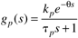
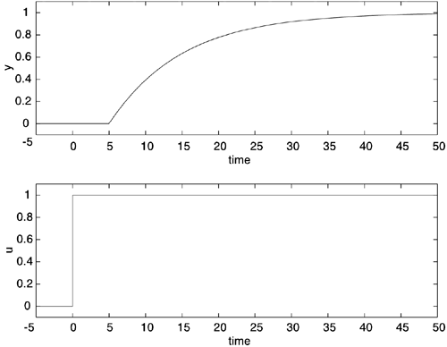

| [ Team LiB ] |
|
3.10 Processes with Dead TimeMany processes have a delayed response to a process input, either due to transport lags (such as flow through pipes) or high-order effects. In Section 3.3.4 we found that a time-delay of q time units had a transfer function of e–qs. A first-order process combined with a time-delay has the transfer function  Consider a process with kp = 1, tp = 10, and q = 5. A unit step input change at t = 0 yields the response shown in Figure 3-15. We see that the time-delay shifts the response of the output. Figure 3-15. Response of a first-order + dead time process. |
| [ Team LiB ] |
|